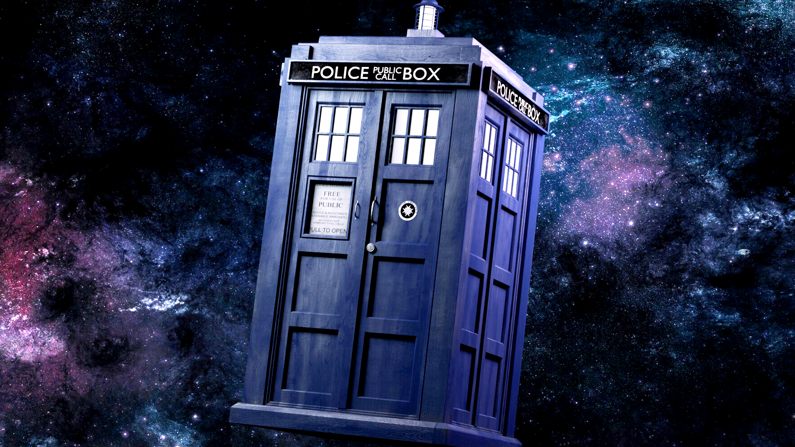

Doctor who é uma serie sobre um alienigena que viaja no tempo
Para as viagens ele ultiliza uma nave chamada tardis.

O doutor é o personagem princcipal da serie e ele o nome
doutor é um titulo que ele escolheu, na cultura do povo dele a
escolha do titulo é uma promessa, e ele escolheu o nome doutor
porque significa "Aquele que cura e torna as pessoas melhores"
No universo de Doctor Who, os companheiros, um companheiro protege o Doutor,
questiona suas decisões e se envolve em encrencas que movimentam a narrativa.
Eles agem como uma ponte para o público, permitindo que espectadores compreendam
melhor o mundo da série. Apesar de muitos serem humanos, companheiros podem ter
origens diversas, incluindo outros planetas e diferentes épocas
Doctor Who possui uma vasta galeria de vilões, cada um com objetivos únicos e frequentemente
ligados a confrontos épicos com o Doutor ao longo de sua longa história